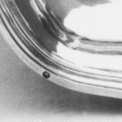

The dates do meet
The Morel pair is dated 1763–64. Another Paris dish carries a discharge period that includes those years.


The same pixel window is enlarged from each separately framed photograph. The circles look similar at this scale; their interiors do not resolve into an icon here.
The Morel pair
The Met dates .169 and .170 to 1763–64, names Jean-Louis Morel, and titles both dishes as one of a pair. In the full reverse photographs each has a small ring at the outer edge. The records do not identify or describe these circles.
A named discharge
Petit Palais record PPO3616 is another Paris silver dish. Its object date is 1765–66. At the rim it records a discharge for Paris 1762–68, described as a “tête de braque.” The named mark period covers the Morels' object dates.
Grey bars are object dates; the rust bar is the period the record assigns to a named discharge. The period fits the Morel dates. That overlap makes the repeated circles worth investigating; it does not assign this mark to either one. The Paris Musées wording is record evidence; the ring shapes are my reading of the Met Public Domain photographs.